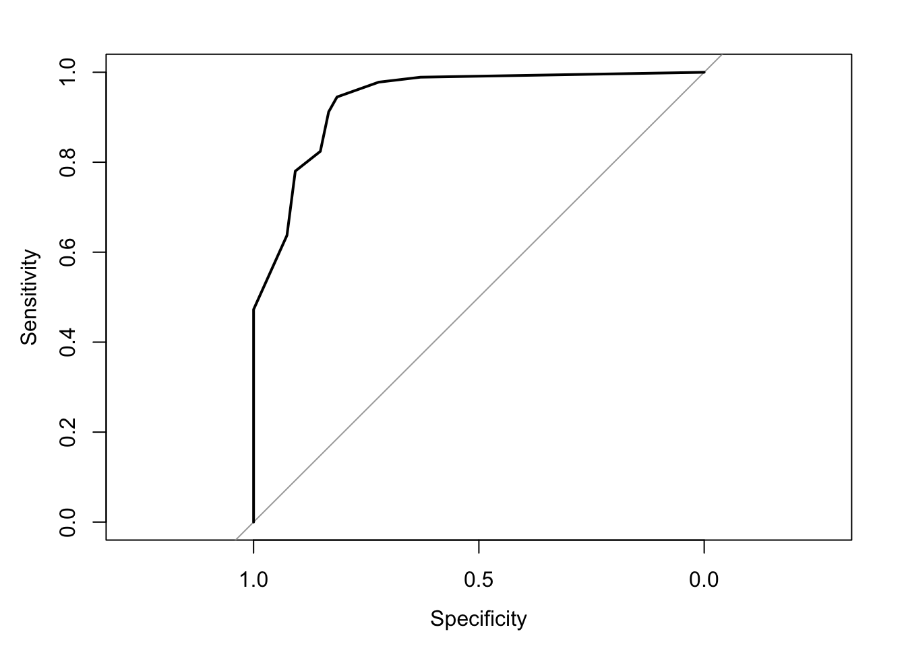
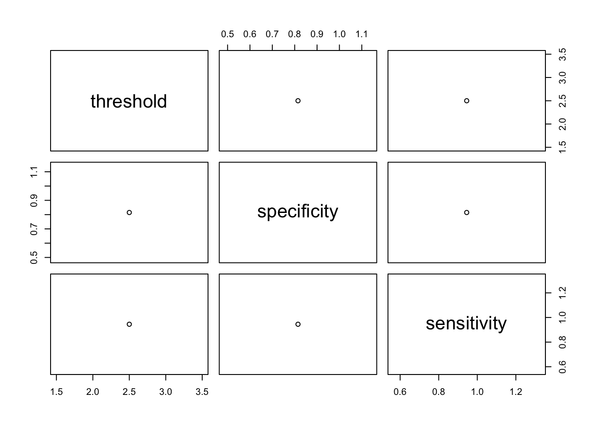

curl::curl_download("https://doi.org/10.1371/journal.pone.0249970.s005", "ROC.xlsx")
dfCutpoint <- readxl::read_excel("ROC.xlsx")9 R でスクリーニング評価
9.1 はじめに
ROC 曲線の描き方
- x軸を 偽陽性率 (1-特異度)、y軸を感度とする。
- 検査値ごとの感度、特異度をプロットする。
- 点をつなぐ（これを、Receiver Operator Curve, ROC という)
スクリーニングツールとしての評価
- 全体の面積を1としたときの ROC の下の面積 (Area Under the Curve, AUC) が、0.7以上であればスクリーニングとして適すると判断する。
以下の方式で、最適なカットオフ値を求める (カッコ内は pROC の print.thres.best.method, OptimalCutpoints での methods, cutpointr の metric)
- 感度 - (1 - 特異度) が最大の点 (youden, Youden, youden)
- 左上からの距離が最小の点 (closest.topleft, ROC01, roc01)
- 感度 × 特異度が最大の点 (…, MaxProdSpSe, prod_sens_spec)
- その他多数（CRAN パッケージ内の説明を参照）
以下の論文で、実際にスクリーニングツールを評価してみましょう。
Chakraborty S, Bhatia T, Sharma V, Antony N, Das D, Sahu S, … & Deshpande SN (2021) Psychometric properties of a screening tool for autism in the community—The Indian Autism Screening Questionnaire (IASQ). PLoS One, 16(4), e0249970. https://journals.plos.org/plosone/article?id=10.1371/journal.pone.0249970
著者は13人いて、10人がニューデリーの機関に所属、3人は米国 Pittsuburgh の大学及び大学病院所属。
自閉症スペクトラム障がいの検査には時間がかかり、また検査ができるようにするための訓練にも時間がかかります。さらに、現状では乳幼児を対象にしたものがほとんどで、成人などを対象としたスクリーニングツールがありませんでした。一般に、自閉症の有病率は1〜2%と言われていますが、インドにおける先行研究ではこれより低い値で、著者らはスクリーニングツールにも問題があるのではないかという疑問があったようです。
筆者らは、2009年に40項目、5 段階のツールを作りました (ISAA、40〜200点)。しかし、これはまだ検査者にトレーニングを要するなど、使いやすいものではありません。そこで、現在使われている検査の中から10の質問項目を抽出し、簡単にできるものを開発しました (IASQ、0〜10点)。このツールが有効であるかどうかを研究した論文です。
研究参加者は、自閉症または他の精神障害を診断されている、3〜18歳の人の親または介護者。
カットオフ値を 1 とすると感度 99%、特異度 62%。カットオフ値を 2 とすると感度 98%、特異度 71%です。
カットオフ値は、最終的に 1 としたようです。これはつまり、10 項目中 1 項目でも当てはまれば、自閉症の可能性があるということになります。スクリーニングツールとしては、カットオフ値 1 点というのはどうなのか？とも思いますが、現状自閉症の可能性のある人を十分診断できていないという問題点から、低めに設定したのかもしれません。
9.2 データの読み込み
今回は、エクセルデータです。まずダウンロードしてから読み込みます。2 度目以降はダウンロード済みなので、1 行目は不要になります。
New names:
• `Family ID` -> `Family ID...2`
• `Family ID` -> `Family ID...10`Excel 表の列名が長いので、短く変更しておきます。
dfCutpoint$Autism <- dfCutpoint$`Clinical Diagnosis of child autism 1, no autism 0`
dfCutpoint$IASQ <- dfCutpoint$`Total Score of IASQ`9.3 ROC 曲線
dfCutpoint$Autism <- as.factor(dfCutpoint$Autism)
pROC::plot.roc(dfCutpoint$Autism, dfCutpoint$IASQ)Setting levels: control = 0, case = 1Setting direction: controls < cases
ROC曲線は描くことができました。しかし、x軸、y軸の範囲など直すところが多そうです。
9.4 カットオフ値
次に、カットオフ値を求めます。
rocCutoff <- pROC::roc(response = dfCutpoint$Autism,
predictor = dfCutpoint$IASQ,
data = dfCutpoint)Setting levels: control = 0, case = 1Setting direction: controls < casescoCutoff <- pROC::coords(roc = rocCutoff,
x = "best",
best.method = "youden")
DT::datatable(coCutoff)結果が 2.5 となりました。
IASQ はこの数値は小数点のある Double 型だったためと思われ、整数 (integer) 型にしてみましたが、それでも代わりませんでした。この時の感度が0.81、特異度が0.95と推定されました。
次に、cutpointr ライブラリを使います。
ここでは、Youden index が最大になる方法でカットオフ値を求めます。
主な引数の値
- metric:
- youden: Youden index (感度 + 特異度 - 1)
- sum_sens_spec: 感度 + 特異度
- prod_sens_spec: 感度 × 特異度
- method:
- maximize_metric: metric を最大化します。
cpROC <- cutpointr::cutpointr(data = dfCutpoint,
x = IASQ,
class = Autism,
method = cutpointr::maximize_metric,
metric = cutpointr::youden)Assuming the positive class is 1Assuming the positive class has higher x valuessummary(cpROC)Method: maximize_metric
Predictor: IASQ
Outcome: Autism
Direction: >=
AUC n n_pos n_neg
0.9383 145 91 54
optimal_cutpoint youden acc sensitivity specificity tp fn fp tn
3 0.7599 0.8966 0.9451 0.8148 86 5 10 44
Predictor summary:
Data Min. 5% 1st Qu. Median Mean 3rd Qu. 95% Max. SD NAs
Overall 0 0.0 1 6 4.710345 8 9 10 3.395089 0
0 0 0.0 0 0 1.314815 2 7 7 2.230357 0
1 0 2.5 6 7 6.725275 8 9 10 2.119046 0この場合、カットオフ値は３となりました。この時の感度は0.9451、特異度は0.8148です。 ROC曲線の AUC は 0.9383 です。
なお、元の論文では、AUC は0.95、カットオフ値3 では、感度0.944、特異度0.800となっており、わずかですが数値が異なります。
Figure 2 のような図を作図してみます。
plot(coCutoff)
OptimalCutpoints は機能が多そうですが、エラーが出てうまくいきませんでした。
9.5 サンプルサイズ
感度・特異度や ROC 曲線による解析は、サンプルサイズ計算はあまりされていないようです。ただし、R で計算を行うことも可能ですので、研究計画に盛り込んでおくと良いでしょう。
サーバー側で R を使ってサンプルサイズ計算ができるサイトがあります。このサイトでは、必要な引数を設定することで、R コードも表示されます。
https://shiny.ctu.unibe.ch/app_direct/presize/
たとえば、感度 0.8、その95%信頼区間の幅を 0.1 (0.75-0.85) とする場合、 n = 244.154 が必要であることが示されます。
presize::prec_sens(sens = 0.8,
conf.width = 0.1,
conf.level = 0.95,
round = 'ceiling',
method = 'wilson')
sample size for a sensitivity with Wilson confidence interval.
sens sensadj n prev ntot conf.width conf.level lwr upr
1 0.8 0.795353 244.154 NA NA 0.1 0.95 0.745353 0.845353
NOTE: sensadj is the adjusted sensitivity, from which the ci is calculated.
n is the number of positives, ntot the full sampleBrown LD, Cai TT, DasGupta A (2001) Interval Estimation for a Binomial Proportion, Statistical Science , 16:2, 101-117, doi:10.1214/ss/1009213286
Bujang MA & Adnan TH (2016) Requirements for minimum sample size for sensitivity and specificity analysis. Journal of clinical and diagnostic research: JCDR, 10(10), YE01.